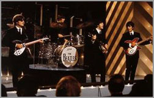

"I was nervously waiting ..." | |||
| An interview with Alan W. Pollack | |||
| by Ian Hammond | |||
|
|
|||
 On the 31st of May 1989 Alan W. Pollack published the first installment of his famous Notes on ... the Beatles' songs on the Internet, a musicological analysis of "We Can Work It Out". He did work it out. In February 2000 he finally completed his analyses of the full Beatles' catalog with his discussion of "Her Majesty". Here, interviewed by Ian Hammond, Pollack looks back on ten years and just over eight months of Beatles' studies. |
|||
|
|
|||
| 1 | How did the series start? | ||
| The confluence of a number of factors triggered the first installment of the "Notes on ..." series over the Memorial Day weekend of May 1989: | |||
|
|||
| 2 | When did you decide to do all the songs? | ||
| The possibility of doing all the songs, or at least an open-ended series covering "many" of them, was under consideration from the very first article. I was nervously waiting to see how the first Notes would go down. No one in r.m.b. had ever touched the music on my level of detail. And historically, guys like Wilfrid Mellers had put quite the kibosh on mating musicology with the Beatles. It wasn't so much a matter of whether or not to do the full series, per se; rather deciding whether or not pushing each article to the Internet as it was completed would be a good idea or not, all things considered. | |||
| 3 | How long did you think the series would take? | ||
| I could have been done in as little as about two years if I were working full time in musical academia or just plain filthy rich like Mr. McCartney, Senior. My actual pace in the beginning was very close to one article per week, which would have come out to about four years for a series of about two hundred articles. | |||
| When did you work out that it would take a lot longer? | |||
| Real life, meaning a full time job in the software industry, two young children, and a spouse with her own career, made it impossible for me to sustain the initial pace. On some irregular but not infrequent basis I found myself sometimes going a month or longer without working on the project at all. | |||
| Somewhere about the second or third year in, when I started to take my desire and intention to do the whole thing more seriously, it was time for a reality check; taking the average elapsed time per article to-date and extrapolating outward for the rest of the series. That calculation came out to be much longer than even the ten years, eight months that it eventually has taken. | |||
| Following a period of panic and frustration whose duration I'm reluctant to document, I surprised myself by eventually achieving what Holden Caulfield's English teacher, Mr. Antonlini, described as the maturity to live humbly by a cause. I started enjoying what I was doing much more the moment that I ceased to care (as much) about when the job would be finished. | |||
| 4 | As you noted, you changed your approach after about 28 pieces. Why was that? | ||
| In the first 28 pieces I was insisting on working from a unique angle or point of departure for each song. This became a difficult burden to sustain over the long run, especially if I was going to cover every song, some of which (a surprisingly few, actually) would not bear such an individualized approach. I eventually resorted to a template, inspired by Unix man pages, to facilitate the process of starting each new article, and to insure more consistent coverage of each song. The first 28 ironically contained more sidebar-like depth in some areas, but contained many blind spots in others. | |||
| Which were the tougher nuts to crack? | |||
| Any song that contained one or more of the following anomalies: | |||
|
|||
| Which was the toughest chord sequence to decode? | |||
| If I have to pick just one, it's the Intro to "If I Fell". | |||
| 5 | What were your biggest "Aha" experiences? | ||
| At the high level, I was amazed very early on at how often you'd find examples of the three "anomalistic" categories in even the very early songs. People in general have tended to underrate the first half of the catalog in this respect. I don't know how to quantify "biggest." I like to think the series provided a fairly regular stream of "aha" experiences of whatever size. Personally, I would get an enormous rush sometimes out of relatively microscopic discoveries. Some examples: | |||
|
|||
| What were your worst mistakes? | |||
| Treating "Drive My Car" as if the home key were G. No contest. You, Ian, might rightfully choose my article on "Revolution 9" for categorically dismissing the possibility of its containing the level of detailed compositional control you've suggested in your own essay on the track. [1] On the other hand, I'm still not 100% sure I agree with you there :-) | |||
| 6 | Having now submitted all the songs to a more or less orthogonal treatment, how well did you find that the 'school' tools fitted the task? | ||
| In my humble opinion, the overall success of the series rests on the extent to which my tool set for the project is a not-too-doctrinaire personal synthesis of a number of music theory "schools," further adapted to the particular challenges of the material under study. The downside of this approach is that it allows my work to potentially "fall between two stools;" i.e. my lay readership finds the tech talk inscrutable such as it is, while my academic colleagues resent that this same tech talk is not cast in terms of a more rigorous and easily identifiable doctrine. | |||
| Where, if anywhere, did you find the standard tools most wanting? | |||
| Using ASCII text to approximate musical examples that would have been much easier to grok using staff notation. | |||
| What would you do differently if you started over? | |||
| I'd learn enough about playing the guitar to understand its basic techniques. I've got enough keyboard technique to appreciate how difficult it would be to fully understand the piano music of, say, Chopin or Debussy, without that knowledge. So I'm sensitive to the likelihood that I've missed some important guitar-related stuff when it comes to the Beatles. | |||
| 7 | You've posted "Notes On" articles to r.m.b.m. (and r.m.b. earlier on I guess) for close to a decade. The response to the articles must have been a reflection of the make-up of the group. Do you have a view on how the group has changed in composition over that period? | ||
| Evolution of response to the series has been curiously orthogonal to changes in the newsgroups themselves. | |||
| Response to the series has very gradually but steadily grown over the years. Availability of the full series on the Web has helped this. I've always had a steady (but thankfully small minority) of negative responses ranging from the gently teasing ("You don't get out much, do you?") to the disturbingly nasty ("Dude, you are one of the most pretentious bullshitters I have ever come across.") On the flip side, the series has received no small amount of gratifying and unsolicited critical acclaim in recent years. | |||
| The newsgroups themselves have changed in ways no different, really, from the rest of the Internet. I seem to recall that while there were plenty of flame wars in the early days, they were much less ad-hominem, and (generally) more focused on the facts and opinions under discussion. Perhaps I look back through rose-colored glasses. I do believe there's been an unfortunate precipitous drop in the signal-to-noise ratio in the newsgroup postings. But that's the inevitable price of the democratization of technology for which there is no refund nor turning back of the clock. | |||
| 8 | Where are the "Notes On" web-pages available on the web? | ||
| Three different venues in different formats: | |||
|
|||
| 9 | Is it true that your name is really George Martin and you wrote all the songs in first place (and also played drums on most Beatle tracks)? | ||
| And what if I said, "yes?" | |||
| How often did you watch "A Hard Day's Night"? | |||
| Not as often as you'd think. I've developed a life-long facility for obsessively memorizing vast portions of favorite movies whose content I believed provided an apt quote for every one of life's moments. This goes all the way back to the time I watched "Yankee Doodle Dandy" on TV 9 times in 7 days on "Million Dollar Movie" back in the late 1950s. Who needed a VCR? | |||
| Does anyone owe you any money etc. now the series is complete? | |||
| No, actually, we're just good friends. | |||
| Have you just run out of excuses at home? | |||
| I've always liked that question. | |||
| 10 | What are your thoughts, looking back at all the effort and at the product? Are you proud of what you've achieved? | ||
| Gee, what a question to ask a fella! Yes, I'm humbly "proud" to contribute something hopefully lasting to the study of the Beatles' songs. I've barely scratched the surface, though I believe my series provides both a worthy guide for the listener, as well a trail already blazed for the more serious scholar who would wish to explore more deeply than I have. | |||
| Above all I truly thank God for providing me with the mental faculties, not to mention the inspiration and support of worthy teachers, loving family, and so many friendly netizens essential in order to complete such a project. | |||
| Regards,
Alan (021300#196) |
|||
|
|
|||
| Note | |||
| 1. Ian Hammond's own analysis of "Revolution 9" can be found on his site Beathoven, a site fully dedicated to the music of the Beatles. |
|||
|
|
|||
| Copyright © 2000 by Alan W. Pollack. All Rights Reserved. This article may be reproduced, retransmitted, redistributed and otherwise propagated at will, provided that this notice remains intact and in place. | |||